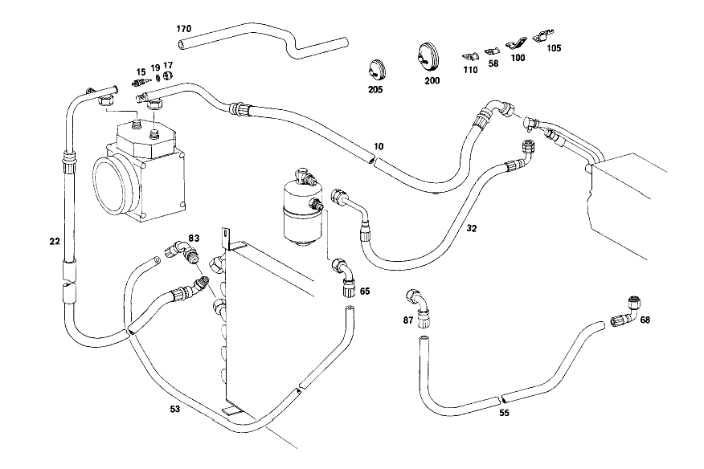

| № | Артикул | Название | Кол. | Примечание | Ограничение |
|---|---|---|---|---|---|
| 15 | A 115 832 00 85 | - Золотник клапана | 1 | Z 55.975/01, Z 55.975/02, Z 55.975/03, Z 55.975/04, Z 55.975/05 | |
| 17 | A 000 131 13 56 | - ЗАГЛУШКА РЕЗЬБОВАЯ | - | Z 55.975/01, Z 55.975/02, Z 55.975/03, Z 55.975/04, Z 55.975/05 | |
| 17 | A 115 832 00 98 | - УПЛОТНИТЕЛЬ | - | Z 55.975/01, Z 55.975/02, Z 55.975/03, Z 55.975/04, Z 55.975/05 | |
| 17 | A 123 832 00 33 | - КОЛПАЧОК | - | Z 55.975/01, Z 55.975/02, Z 55.975/03, Z 55.975/04, Z 55.975/05 | |
| 17 | A 201 988 06 35 | - Колпачок | 1 | Z 55.975/01, Z 55.975/02, Z 55.975/03, Z 55.975/04, Z 55.975/05 | |
| 19 | A 115 997 15 40 | - УПЛОТНИТ. КОЛЬЦО | - | Z 55.975/01, Z 55.975/02, Z 55.975/03, Z 55.975/04, Z 55.975/05 | |
| 19 | A 123 832 00 33 | - КОЛПАЧОК | - | Z 55.975/01, Z 55.975/02, Z 55.975/03, Z 55.975/04, Z 55.975/05 | |
| 19 | A 201 988 06 35 | - Колпачок | 1 | Z 55.975/01, Z 55.975/02, Z 55.975/03, Z 55.975/04, Z 55.975/05 | |
| 32 | A 115 831 09 94 | ШЛАНГ | - | Рулевое управление: Влево Z 55.975/01, Z 55.975/02, Z 55.975/03, Z 55.975/04, Z 55.975/05, Z 55.975/08 | |
| 53 | A 000 997 15 52 | ШЛАНГ | - | Z 55.975/01, Z 55.975/02, Z 55.975/03, Z 55.975/04, Z 55.975/05, Z 55.975/06, Z 55.975/08 [076] LESS HOSE CONNECTIONS | |
| 53 | A 000 997 35 52 | ШЛАНГ | - | Z 55.975/01, Z 55.975/02, Z 55.975/03, Z 55.975/04, Z 55.975/05, Z 55.975/06, Z 55.975/08 | |
| 53 | A 018 997 18 82 | ШЛАНГ | - | Z 55.975/01, Z 55.975/02, Z 55.975/03, Z 55.975/04, Z 55.975/05, Z 55.975/06, Z 55.975/08 | |
| 53 | A 018 997 59 82 | ШЛАНГ | - | Z 55.975/01, Z 55.975/02, Z 55.975/03, Z 55.975/04, Z 55.975/05, Z 55.975/06, Z 55.975/08 | |
| 53 | A 000 997 17 52 | Шланг | 0 | BLACK; I.D.: 6 2700 MM Z 55.975/01, Z 55.975/02, Z 55.975/03, Z 55.975/04, Z 55.975/05, Z 55.975/06, Z 55.975/08 [076] LESS HOSE CONNECTIONS | |
| 53 | A 000 997 17 52 | - Шланг | 1 | КОНДЕНС. К БАЧКУ ЖИДК. ФАЗЫ 1250 MM Рулевое управление: Влево Z 55.975/01, Z 55.975/02, Z 55.975/03, Z 55.975/04, Z 55.975/08 | |
| 53 | A 000 997 17 52 | - Шланг | 1 | КОНДЕНС. К БАЧКУ ЖИДК. ФАЗЫ 1680 MM Рулевое управление: Вправо Z 55.975/01, Z 55.975/02, Z 55.975/04 | |
| 53 | A 000 997 17 52 | - Шланг | 1 | FROM LIQUID TANK TO EVAPORATOR 470 MM Рулевое управление: Вправо Z 55.975/04 | |
| 55 | A 000 997 17 52 | Шланг | 0 | N.W.: 8 5250 MM Z 55.975/01, Z 55.975/02, Z 55.975/03, Z 55.975/04, Z 55.975/05, Z 55.975/06, Z 55.975/08 [076] LESS HOSE CONNECTIONS | |
| 55 | A 000 997 17 52 | - Шланг | 1 | КОНДЕНС. К БАЧКУ ЖИДК. ФАЗЫ 1600 MM Рулевое управление: Вправо Z 55.975/03, Z 55.975/04 | |
| 55 | A 000 997 17 52 | Шланг | 1 | БАЧОК ОЖ К РАСШИРИТ. КЛАПАНУ 475 MM Рулевое управление: Вправо Z 55.975/03, Z 55.975/04 | |
| 55 | A 000 997 17 52 | - Шланг | 1 | БАЧОК ОЖ К РАСШИРИТ. КЛАПАНУ 430 MM Рулевое управление: Влево Z 55.975/01, Z 55.975/02, Z 55.975/03, Z 55.975/04, Z 55.975/05, Z 55.975/06, Z 55.975/08 | |
| 58 | A 112 995 01 20 | ХОМУТ | 4 | (FROM LIQUID TANK TO EXPANSION VALVE) Рулевое управление: Влево Z 55.975/01, Z 55.975/02, Z 55.975/03, Z 55.975/04, Z 55.975/05 [068] UP TO CHASSIS: 114.007,008,015,017 209639 114.011 102207 114.023 100187 115.005,017 006588 115.015 211284 115.105,107,108,117,119 010780 115.110 410892 115.115 213558 | |
| 65 | A 000 997 93 68 | СОЕДИНИТЕЛЬ | 1 | 90 DEGREES;I.D.:6 3/4" Z 55.975/01, Z 55.975/02, Z 55.975/03, Z 55.975/04, Z 55.975/05, Z 55.975/06, Z 55.975/08 [402] БОЛЬШЕ НЕ ПОСТАВЛЯЕТСЯ | |
| 68 | A 000 997 05 68 | СОЕДИНИТЕЛЬ | 1 | 135 DEGREES;I.D.,8 5/8" Рулевое управление: Влево Z 55.975/01, Z 55.975/02, Z 55.975/03, Z 55.975/04, Z 55.975/05, Z 55.975/08 | |
| 83 | A 001 997 15 68 | СОЕДИНИТЕЛЬ | 1 | 90 DEGREES;I.D.:6 3/4" Z 55.975/01, Z 55.975/02, Z 55.975/03, Z 55.975/04, Z 55.975/05, Z 55.975/08 | |
| 87 | A 000 997 66 68 | Штуцер шланга | 1 | 90 DEGREES;I.D.,8 3/4" Рулевое управление: Влево Z 55.975/01, Z 55.975/02, Z 55.975/03, Z 55.975/04, Z 55.975/05, Z 55.975/06, Z 55.975/08 | |
| 100 | A 114 328 01 40 | ДЕРЖАТЕЛЬ | 1 | EVAPORATOR\-TO\-COMPRESSOR HOSE Рулевое управление: Влево Z 55.975/01, Z 55.975/02, Z 55.975/04, Z 55.975/05 [402] БОЛЬШЕ НЕ ПОСТАВЛЯЕТСЯ [005] FROM CHASSIS: 114.010 018151 114.015,017 015974 115.010 032250 115.015 031247 115.110,112 064600 115.115 029690 [056] FROM CHASSIS: 114.011,021 000001 [072] UP TO CHASSIS: 115.105,107,108,117,119 010780 115.110 410892 115.115 213558 | |
| 105 | A 116 830 04 96 | ШЛАНГ | 1 | ИСПАРИТЕЛЬ К КОМПРЕССОРУ Рулевое управление: Вправо Z 55.975/04 [012] FROM CHASSIS: 114.005,007,008,015,017 065532 114.010 054109 114.021 004933 114.022 012050 [040] FROM CHASSIS: 115.000,002,010 062139 115.015 068297 115.100,102,103,112 156296 115.115 074148 | |
| 105 | A 114 995 01 20 | ХОМУТ | 1 | EVAPORATOR\-TO\-COMPRESSOR HOSE Рулевое управление: Влево Z 55.975/01, Z 55.975/02, Z 55.975/04, Z 55.975/05 [402] БОЛЬШЕ НЕ ПОСТАВЛЯЕТСЯ [005] FROM CHASSIS: 114.010 018151 114.015,017 015974 115.010 032250 115.015 031247 115.110,112 064600 115.115 029690 [056] FROM CHASSIS: 114.011,021 000001 [072] UP TO CHASSIS: 115.105,107,108,117,119 010780 115.110 410892 115.115 213558 | |
| 178 | A 115 990 31 01 | БОЛТ | 1 | Z 55.975/04, Z 55.975/08 [409] ПРИ МОНТАЖЕ ПОДОГНАТЬ ПО МЕСТУ | |
| 184 | A 187 995 00 37 | хомут | 1 | Z 55.975/04 | |
| 200 | A 321 997 00 81 | втулка | - | Z 55.975/01, Z 55.975/02, Z 55.975/03, Z 55.975/04 | |
| 200 | A 335 997 00 81 | втулка | 1 | Z 55.975/01, Z 55.975/02, Z 55.975/03, Z 55.975/04 [068] UP TO CHASSIS: 114.007,008,015,017 209639 114.011 102207 114.023 100187 115.005,017 006588 115.015 211284 115.105,107,108,117,119 010780 115.110 410892 115.115 213558 | |
| 205 | A 110 997 04 81 | втулка | 1 | Z 55.975/01, Z 55.975/02, Z 55.975/03, Z 55.975/04 [068] UP TO CHASSIS: 114.007,008,015,017 209639 114.011 102207 114.023 100187 115.005,017 006588 115.015 211284 115.105,107,108,117,119 010780 115.110 410892 115.115 213558 | |
| A 114 831 02 94 | ШЛАНГ | - | Z 55.975/01, Z 55.975/02, Z 55.975/03, Z 55.975/04 | ||
| A 114 831 01 94 | ШЛАНГ | - | Z 55.975/01, Z 55.975/02, Z 55.975/03, Z 55.975/04 | ||
| A 115 831 08 94 | ШЛАНГ | - | Z 55.975/01, Z 55.975/02, Z 55.975/03, Z 55.975/04 | ||
| A 115 831 05 94 | ШЛАНГ | - | Z 55.975/01, Z 55.975/02, Z 55.975/03, Z 55.975/04 | ||
| A 115 831 32 94 | ШЛАНГ | - | Рулевое управление: Влево Z 55.975/04, Z 55.975/05 [065] ИСПОЛЬЗ.СТАР.НОМЕР ДЕТАЛИ ПРИ ШАССИ: 114.005,010,021,022 UNTIL PRODUCTION STOP 114.007,008,015,017 209639 114.011 102207 114.023 100187 115.000,002,010,100,102,103,112 UNTIL PRODUCTION STOP 115.015 211284 115.110 410892 115.115 213558 115.105,107,108,117,119 010780 | ||
| A 115 830 01 96 | ШЛАНГ | 1 | ИСПАРИТЕЛЬ К КОМПРЕССОРУ Рулевое управление: Влево Z 55.975/04, Z 55.975/05 | ||
| A 115 831 23 94 | ШЛАНГ | - | Рулевое управление: Вправо Z 55.975/03, Z 55.975/04 | ||
| A 115 830 06 96 | ШЛАНГ | 1 | ИСПАРИТЕЛЬ К КОМПРЕССОРУ Рулевое управление: Вправо Z 55.975/04 [070] FROM CHASSIS: 114.007,008,015,017 209640 114.011 102208 114.023 100188 115.005,017 006589 115.015 211285 115.105,107,108,117,119 010781 115.110 410893 115.115 213559 | ||
| A 115 831 04 94 | ШЛАНГ | - | Z 55.975/01, Z 55.975/04, Z 55.975/05 | ||
| A 114 831 04 94 | ШЛАНГ | - | Z 55.975/01, Z 55.975/04, Z 55.975/05 | ||
| A 115 831 12 94 | ШЛАНГ | - | Z 55.975/01, Z 55.975/04, Z 55.975/05 | ||
| A 115 831 11 94 | ШЛАНГ | - | Z 55.975/01, Z 55.975/04, Z 55.975/05 | ||
| A 115 831 24 94 | ШЛАНГ | - | Z 55.975/01, Z 55.975/04, Z 55.975/05 | ||
| A 115 831 33 94 | ШЛАНГ | - | Рулевое управление: Вправо Z 55.975/01, Z 55.975/02, Z 55.975/03, Z 55.975/04, Z 55.975/05 | ||
| A 115 830 04 96 | ШЛАНГ | - | Рулевое управление: Вправо Z 55.975/04 [070] FROM CHASSIS: 114.007,008,015,017 209640 114.011 102208 114.023 100188 115.005,017 006589 115.015 211285 115.105,107,108,117,119 010781 115.110 410893 115.115 213559 [073] ИСПОЛЬЗ.СТАР.НОМЕР ДЕТАЛИ ПРИ ШАССИ: 115.000,002,010,100,102,103 UNTIL PRODUCTION STOP 115.005,017 020913 115.015 229524 115.105,107,108,117,119 044208 115.110 425723 115.115 236589 [084] ИСПОЛЬЗ.СТАР.НОМЕР ДЕТАЛИ ПРИ ШАССИ: 115.100,102,103,112 UNTIL PRODUCTION STOP 115.105,107,108,117,119 080904 115.110 443040 115.115 273615 | ||
| A 115 830 16 15 | ТРУБОПРОВОД | 1 | FROM CONDENSER TO YORK COMPRESSOR Рулевое управление: Вправо Z 55.975/04 | ||
| A 115 830 16 15 | ТРУБОПРОВОД | 1 | Рулевое управление: Влево Z 55.975/04 | ||
| A 115 832 00 85 | - Золотник клапана | 1 | Z 55.975/01, Z 55.975/02, Z 55.975/03, Z 55.975/04 | ||
| A 000 131 13 56 | - ЗАГЛУШКА РЕЗЬБОВАЯ | - | Z 55.975/01, Z 55.975/02, Z 55.975/03, Z 55.975/04 | ||
| A 115 832 00 98 | - УПЛОТНИТЕЛЬ | - | Z 55.975/01, Z 55.975/02, Z 55.975/03, Z 55.975/04 | ||
| A 123 832 00 33 | - КОЛПАЧОК | - | Z 55.975/01, Z 55.975/02, Z 55.975/03, Z 55.975/04 | ||
| A 201 988 06 35 | - Колпачок | 1 | Z 55.975/01, Z 55.975/02, Z 55.975/03, Z 55.975/04 | ||
| A 115 997 15 40 | - УПЛОТНИТ. КОЛЬЦО | - | Z 55.975/01, Z 55.975/02, Z 55.975/03, Z 55.975/04 | ||
| A 123 832 00 33 | - КОЛПАЧОК | - | Z 55.975/01, Z 55.975/02, Z 55.975/03, Z 55.975/04 | ||
| A 201 988 06 35 | - Колпачок | 1 | Z 55.975/01, Z 55.975/02, Z 55.975/03, Z 55.975/04 | ||
| A 115 831 33 94 | ШЛАНГ | - | Рулевое управление: Влево Z 55.975/03, Z 55.975/04, Z 55.975/05 | ||
| A 000 997 21 52 | Шланг | 1 | КОМПРЕССОР К КОНДЕНСАТОРУ Рулевое управление: Влево Z 55.975/03, Z 55.975/04, Z 55.975/05 [065] ИСПОЛЬЗ.СТАР.НОМЕР ДЕТАЛИ ПРИ ШАССИ: 114.005,010,021,022 UNTIL PRODUCTION STOP 114.007,008,015,017 209639 114.011 102207 114.023 100187 115.000,002,010,100,102,103,112 UNTIL PRODUCTION STOP 115.015 211284 115.110 410892 115.115 213558 115.105,107,108,117,119 010780 | ||
| A 115 830 04 96 | ШЛАНГ | - | Рулевое управление: Влево Z 55.975/03, Z 55.975/04, Z 55.975/05 [073] ИСПОЛЬЗ.СТАР.НОМЕР ДЕТАЛИ ПРИ ШАССИ: 115.000,002,010,100,102,103 UNTIL PRODUCTION STOP 115.005,017 020913 115.015 229524 115.105,107,108,117,119 044208 115.110 425723 115.115 236589 | ||
| A 115 830 17 15 | ТРУБОПРОВОД | 1 | КОМПРЕССОР К КОНДЕНСАТОРУ FORD\-YORK Рулевое управление: Влево Z 55.975/03, Z 55.975/04, Z 55.975/05 | ||
| A 115 832 00 85 | - Золотник клапана | 1 | Рулевое управление: Влево Z 55.975/01, Z 55.975/02, Z 55.975/03, Z 55.975/04, Z 55.975/05 | ||
| A 000 131 13 56 | - ЗАГЛУШКА РЕЗЬБОВАЯ | - | Рулевое управление: Влево Z 55.975/01, Z 55.975/02, Z 55.975/03, Z 55.975/04, Z 55.975/05 | ||
| A 115 832 00 98 | - УПЛОТНИТЕЛЬ | - | Рулевое управление: Влево Z 55.975/01, Z 55.975/02, Z 55.975/03, Z 55.975/04, Z 55.975/05 | ||
| A 123 832 00 33 | - КОЛПАЧОК | - | Рулевое управление: Влево Z 55.975/01, Z 55.975/02, Z 55.975/03, Z 55.975/04, Z 55.975/05 | ||
| A 201 988 06 35 | - Колпачок | 1 | Рулевое управление: Влево Z 55.975/01, Z 55.975/02, Z 55.975/03, Z 55.975/04, Z 55.975/05 | ||
| A 115 997 15 40 | - УПЛОТНИТ. КОЛЬЦО | - | Рулевое управление: Влево Z 55.975/01, Z 55.975/02, Z 55.975/03, Z 55.975/04, Z 55.975/05 | ||
| A 123 832 00 33 | - КОЛПАЧОК | - | Рулевое управление: Влево Z 55.975/01, Z 55.975/02, Z 55.975/03, Z 55.975/04, Z 55.975/05 | ||
| A 201 988 06 35 | - Колпачок | 1 | Рулевое управление: Влево Z 55.975/01, Z 55.975/02, Z 55.975/03, Z 55.975/04, Z 55.975/05 | ||
| A 115 831 07 94 | ШЛАНГ | - | Рулевое управление: Влево Z 55.975/01, Z 55.975/02, Z 55.975/03, Z 55.975/04, Z 55.975/05 [065] ИСПОЛЬЗ.СТАР.НОМЕР ДЕТАЛИ ПРИ ШАССИ: 114.005,010,021,022 UNTIL PRODUCTION STOP 114.007,008,015,017 209639 114.011 102207 114.023 100187 115.000,002,010,100,102,103,112 UNTIL PRODUCTION STOP 115.015 211284 115.110 410892 115.115 213558 115.105,107,108,117,119 010780 | ||
| A 114 831 15 94 | ШЛАНГ | - | Z 55.975/01, Z 55.975/02, Z 55.975/03, Z 55.975/04, Z 55.975/05 | ||
| A 115 831 22 94 | ШЛАНГ | - | Z 55.975/03, Z 55.975/04 [055] ИСПОЛЬЗ.СТАР.НОМЕР ДЕТАЛИ ПРИ ШАССИ: 114.010 013288 114.015 009318 115.010 009757 115.015 006681 115.110 022314 115.115 010253 | ||
| A 115 831 31 94 | ШЛАНГ | - | Рулевое управление: Вправо Z 55.975/03, Z 55.975/04 | ||
| A 115 831 21 94 | ШЛАНГ | - | Z 55.975/03, Z 55.975/04 | ||
| A 115 831 34 94 | ШЛАНГ | - | Рулевое управление: Вправо Z 55.975/03, Z 55.975/04 | ||
| A 000 997 23 52 | Шланг | 0 | N.W.: 13 6000 MM Z 55.975/01, Z 55.975/02, Z 55.975/03, Z 55.975/04, Z 55.975/05, Z 55.975/06, Z 55.975/08 [076] LESS HOSE CONNECTIONS | ||
| A 000 997 23 52 | - Шланг | 1 | ИСПАРИТЕЛЬ К КОМПРЕССОРУ 1420 MM Рулевое управление: Вправо Z 55.975/03, Z 55.975/04 | ||
| A 000 997 21 52 | Шланг | 0 | N.W.: 10 6000 MM Z 55.975/01, Z 55.975/02, Z 55.975/03, Z 55.975/04, Z 55.975/05, Z 55.975/06, Z 55.975/08 [076] LESS HOSE CONNECTIONS | ||
| A 000 997 21 52 | - Шланг | 1 | КОМПРЕССОР К КОНДЕНСАТОРУ 730 MM Рулевое управление: Вправо Z 55.975/01, Z 55.975/02, Z 55.975/03, Z 55.975/04, Z 55.975/05 | ||
| A 100 995 08 20 | ХОМУТ | - | Рулевое управление: Влево Z 55.975/01, Z 55.975/02, Z 55.975/04 | ||
| A 123 995 03 20 | Крепежный хомут | 1 | (FROM LIQUID TANK TO EXPANSION VALVE) Рулевое управление: Влево Z 55.975/04 [004] UP TO CHASSIS: 114.010 018150 114.015,017 015973 115.010 032249 115.015 031246 115.110,112 064599 115.115 029689 | ||
| A 001 997 19 68 | СОЕДИНИТЕЛЬ | 1 | 150 DEGREES;I.D.,6 3/4" Z 55.975/01, Z 55.975/02, Z 55.975/03, Z 55.975/04, Z 55.975/05 [402] БОЛЬШЕ НЕ ПОСТАВЛЯЕТСЯ [403] НЕ УСТАНОВЛЕНО | ||
| A 000 997 94 68 | СОЕДИНИТЕЛЬ | 1 | 180 DEGREES;I.D.,6 5/8" Рулевое управление: Вправо Z 55.975/01, Z 55.975/02, Z 55.975/03, Z 55.975/04 [402] БОЛЬШЕ НЕ ПОСТАВЛЯЕТСЯ | ||
| A 001 997 18 68 | СОЕДИНИТЕЛЬ | - | Рулевое управление: Вправо Z 55.975/04 | ||
| A 001 997 19 68 | СОЕДИНИТЕЛЬ | 1 | 180 DEGREES;I.D.,6 3/4" Рулевое управление: Вправо Z 55.975/04 [402] БОЛЬШЕ НЕ ПОСТАВЛЯЕТСЯ | ||
| A 001 997 20 68 | Штуцер шланга | 1 | 120 DEGREES;I.D.,6 3/4" Рулевое управление: Вправо Z 55.975/01, Z 55.975/02, Z 55.975/03, Z 55.975/04, Z 55.975/08 | ||
| A 000 997 51 68 | Штуцер шланга | 1 | 180 DEGREES;I.D.,8 5/8" Рулевое управление: Вправо Z 55.975/01, Z 55.975/02, Z 55.975/03, Z 55.975/04 | ||
| A 000 997 02 68 | СОЕДИНИТЕЛЬ | 1 | 90 DEGREES;I.D.,8 3/4" Рулевое управление: Вправо Z 55.975/01, Z 55.975/02, Z 55.975/03, Z 55.975/04 | ||
| A 000 997 52 68 | Штуцер шланга | 1 | 180 DEGREES;I.D.,8 3/4" Рулевое управление: Вправо Z 55.975/03, Z 55.975/04 | ||
| A 000 997 11 68 | Штуцер шланга | 1 | 90 ГРАДУСОВ 7/8" N W 10 Рулевое управление: Вправо Z 55.975/01, Z 55.975/02, Z 55.975/03, Z 55.975/04, Z 55.975/05 | ||
| A 000 997 17 68 | Штуцер шланга | 1 | 135 ГРАДУСОВ 7/8" N W 10 Рулевое управление: Вправо Z 55.975/01, Z 55.975/02, Z 55.975/03, Z 55.975/04, Z 55.975/05 | ||
| A 000 997 20 68 | СОЕДИНИТЕЛЬ | 1 | 150 DEGREES 7/8" N W 10 Рулевое управление: Вправо Z 55.975/01, Z 55.975/02, Z 55.975/03, Z 55.975/04, Z 55.975/05 | ||
| A 000 997 21 68 | Штуцер шланга | 1 | 90 ГРАДУСОВ 7/8" N W 13 Рулевое управление: Вправо Z 55.975/01, Z 55.975/02, Z 55.975/04, Z 55.975/08 | ||
| A 000 997 23 68 | Штуцер шланга | 1 | 135 ГРАДУСОВ 7/8" N W 13 Рулевое управление: Влево Z 55.975/01, Z 55.975/02, Z 55.975/03, Z 55.975/04, Z 55.975/05 | ||
| A 000 997 33 68 | СОЕДИНИТЕЛЬ | 1 | 150 DEGREES;I.D.,8 3/4" Рулевое управление: Вправо Z 55.975/01, Z 55.975/02, Z 55.975/03, Z 55.975/04 | ||
| A 000 997 35 68 | СОЕДИНИТЕЛЬ | 1 | 90 DEGREES;I.D.,10 3/4" Рулевое управление: Влево Z 55.975/03, Z 55.975/04, Z 55.975/08 | ||
| A 000 997 35 68 | СОЕДИНИТЕЛЬ | 1 | 3/4" Рулевое управление: Вправо Z 55.975/01, Z 55.975/02, Z 55.975/03, Z 55.975/04, Z 55.975/05, Z 55.975/06, Z 55.975/08 | ||
| A 000 997 41 68 | Штуцер шланга | 1 | 3/4" Рулевое управление: Влево Z 55.975/03, Z 55.975/04 | ||
| A 000 995 00 65 | ХОМУТ | 1 | Рулевое управление: Влево Z 55.975/04 [004] UP TO CHASSIS: 114.010 018150 114.015,017 015973 115.010 032249 115.015 031246 115.110,112 064599 115.115 029689 | ||
| N 007976 004205 | Шуруп | 4 | Рулевое управление: Влево Z 55.975/01, Z 55.975/02, Z 55.975/03, Z 55.975/04, Z 55.975/05 [068] UP TO CHASSIS: 114.007,008,015,017 209639 114.011 102207 114.023 100187 115.005,017 006588 115.015 211284 115.105,107,108,117,119 010780 115.110 410892 115.115 213558 | ||
| N 000125 005317 | Шайба | - | Рулевое управление: Влево Z 55.975/01, Z 55.975/02, Z 55.975/03, Z 55.975/04, Z 55.975/05 | ||
| N 000433 005304 | Шайба | 4 | 5mm Рулевое управление: Влево Z 55.975/01, Z 55.975/02, Z 55.975/03, Z 55.975/04, Z 55.975/05 [068] UP TO CHASSIS: 114.007,008,015,017 209639 114.011 102207 114.023 100187 115.005,017 006588 115.015 211284 115.105,107,108,117,119 010780 115.110 410892 115.115 213558 | ||
| A 114 997 01 90 | Кабельная стяжка | 4 | 80mm Рулевое управление: Влево Z 55.975/01, Z 55.975/02, Z 55.975/03, Z 55.975/04 [070] FROM CHASSIS: 114.007,008,015,017 209640 114.011 102208 114.023 100188 115.005,017 006589 115.015 211285 115.105,107,108,117,119 010781 115.110 410893 115.115 213559 | ||
| N 912004 005103 | Пружинное кольцо | 4 | Рулевое управление: Влево Z 55.975/01, Z 55.975/02, Z 55.975/03, Z 55.975/04, Z 55.975/05 [068] UP TO CHASSIS: 114.007,008,015,017 209639 114.011 102207 114.023 100187 115.005,017 006588 115.015 211284 115.105,107,108,117,119 010780 115.110 410892 115.115 213558 | ||
| A 114 328 02 40 | ДЕРЖАТЕЛЬ | 1 | EVAPORATOR\-TO\-COMPRESSOR HOSE Рулевое управление: Влево Z 55.975/01, Z 55.975/02, Z 55.975/04, Z 55.975/05 [402] БОЛЬШЕ НЕ ПОСТАВЛЯЕТСЯ [072] UP TO CHASSIS: 115.105,107,108,117,119 010780 115.110 410892 115.115 213558 [093] FROM CHASSIS: 114.010 018151 114.015,017 015974 115.010 032250 115.015 031247 115.110,112 064600 115.115 029690 [094] UP TO CHASSIS: 114.005,007,008,015,017 090008 114.010 068509 114.011 007964 114.021 007103 114.022 017649 114.023 005756 115.010 084099 115.110 214029 | ||
| A 114 995 00 20 | хомут | 1 | EVAPORATOR\-TO\-COMPRESSOR HOSE Рулевое управление: Влево Z 55.975/01, Z 55.975/02, Z 55.975/04, Z 55.975/05 [072] UP TO CHASSIS: 115.105,107,108,117,119 010780 115.110 410892 115.115 213558 [093] FROM CHASSIS: 114.010 018151 114.015,017 015974 115.010 032250 115.015 031247 115.110,112 064600 115.115 029690 [094] UP TO CHASSIS: 114.005,007,008,015,017 090008 114.010 068509 114.011 007964 114.021 007103 114.022 017649 114.023 005756 115.010 084099 115.110 214029 | ||
| N 000933 006121 | Винт | - | Рулевое управление: Влево Z 55.975/01, Z 55.975/02, Z 55.975/04, Z 55.975/05 | ||
| N 304017 006020 | Винт с 6-гранной головкой | 1 | EVAPORATOR\-TO\-COMPRESSOR HOSE; M6X20 Рулевое управление: Влево Z 55.975/01, Z 55.975/02, Z 55.975/04, Z 55.975/05 [072] UP TO CHASSIS: 115.105,107,108,117,119 010780 115.110 410892 115.115 213558 [093] FROM CHASSIS: 114.010 018151 114.015,017 015974 115.010 032250 115.015 031247 115.110,112 064600 115.115 029690 [094] UP TO CHASSIS: 114.005,007,008,015,017 090008 114.010 068509 114.011 007964 114.021 007103 114.022 017649 114.023 005756 115.010 084099 115.110 214029 | ||
| A 094 990 68 10 | Пружинное кольцо | 1 | EVAPORATOR\-TO\-COMPRESSOR HOSE Рулевое управление: Влево Z 55.975/01, Z 55.975/02, Z 55.975/04, Z 55.975/05 [005] FROM CHASSIS: 114.010 018151 114.015,017 015974 115.010 032250 115.015 031247 115.110,112 064600 115.115 029690 [056] FROM CHASSIS: 114.011,021 000001 [072] UP TO CHASSIS: 115.105,107,108,117,119 010780 115.110 410892 115.115 213558 | ||
| N 000934 006007 | Гайка | 1 | EVAPORATOR\-TO\-COMPRESSOR HOSE Рулевое управление: Влево Z 55.975/01, Z 55.975/02, Z 55.975/04, Z 55.975/05 [005] FROM CHASSIS: 114.010 018151 114.015,017 015974 115.010 032250 115.015 031247 115.110,112 064600 115.115 029690 [056] FROM CHASSIS: 114.011,021 000001 [072] UP TO CHASSIS: 115.105,107,108,117,119 010780 115.110 410892 115.115 213558 | ||
| A 100 995 08 20 | ХОМУТ | - | Рулевое управление: Влево Z 55.975/01, Z 55.975/02, Z 55.975/03, Z 55.975/04 | ||
| A 123 995 03 20 | Крепежный хомут | 1 | для COMPRESSOR\-TO\-CONDENSER HOSE Рулевое управление: Влево Z 55.975/01, Z 55.975/04 | ||
| A 100 995 08 20 | ХОМУТ | - | Рулевое управление: Вправо Z 55.975/01, Z 55.975/02, Z 55.975/03, Z 55.975/04 | ||
| A 123 995 03 20 | Крепежный хомут | NB | *** 25 MM Рулевое управление: Вправо Z 55.975/01, Z 55.975/02, Z 55.975/03, Z 55.975/04 | ||
| A 153 995 01 20 | хомут | NB | *** 20 MM Рулевое управление: Вправо Z 55.975/01, Z 55.975/02, Z 55.975/03, Z 55.975/04 | ||
| N 007976 004205 | Шуруп | 1 | для COMPRESSOR\-TO\-CONDENSER HOSE Рулевое управление: Вправо Z 55.975/01, Z 55.975/04 | ||
| N 000125 005306 | ШАЙБА | 1 | для COMPRESSOR\-TO\-CONDENSER HOSE Рулевое управление: Вправо Z 55.975/01, Z 55.975/04 | ||
| N 912004 005103 | Пружинное кольцо | 1 | для COMPRESSOR\-TO\-CONDENSER HOSE Рулевое управление: Вправо Z 55.975/01, Z 55.975/04 | ||
| A 108 835 02 91 | ХОМУТ | 1 | для CONDENSER\-TO\-LIQUID\-TANK AND EVAPORATOR\-TO\-COMPRESSOR HOSES Рулевое управление: Вправо Z 55.975/04 [068] UP TO CHASSIS: 114.007,008,015,017 209639 114.011 102207 114.023 100187 115.005,017 006588 115.015 211284 115.105,107,108,117,119 010780 115.110 410892 115.115 213558 | ||
| A 100 995 08 20 | ХОМУТ | - | Рулевое управление: Вправо Z 55.975/03, Z 55.975/04 | ||
| A 123 995 03 20 | Крепежный хомут | 2 | для CONDENSER\-TO\-LIQUID\-TANK AND EVAPORATOR\-TO\-COMPRESSOR HOSES Рулевое управление: Вправо Z 55.975/03, Z 55.975/04 [068] UP TO CHASSIS: 114.007,008,015,017 209639 114.011 102207 114.023 100187 115.005,017 006588 115.015 211284 115.105,107,108,117,119 010780 115.110 410892 115.115 213558 | ||
| A 112 995 01 20 | ХОМУТ | 2 | для CONDENSER\-TO\-LIQUID\-TANK AND EVAPORATOR\-TO\-COMPRESSOR HOSES Рулевое управление: Вправо Z 55.975/03, Z 55.975/04 [068] UP TO CHASSIS: 114.007,008,015,017 209639 114.011 102207 114.023 100187 115.005,017 006588 115.015 211284 115.105,107,108,117,119 010780 115.110 410892 115.115 213558 | ||
| A 153 995 01 20 | хомут | 3 | для CONDENSER\-TO\-LIQUID\-TANK AND EVAPORATOR\-TO\-COMPRESSOR HOSES Рулевое управление: Вправо Z 55.975/03, Z 55.975/04 [068] UP TO CHASSIS: 114.007,008,015,017 209639 114.011 102207 114.023 100187 115.005,017 006588 115.015 211284 115.105,107,108,117,119 010780 115.110 410892 115.115 213558 | ||
| A 114 328 01 40 | ДЕРЖАТЕЛЬ | 1 | для CONDENSER\-TO\-LIQUID\-TANK AND EVAPORATOR\-TO\-COMPRESSOR HOSES Рулевое управление: Вправо Z 55.975/04 [402] БОЛЬШЕ НЕ ПОСТАВЛЯЕТСЯ [068] UP TO CHASSIS: 114.007,008,015,017 209639 114.011 102207 114.023 100187 115.005,017 006588 115.015 211284 115.105,107,108,117,119 010780 115.110 410892 115.115 213558 | ||
| A 114 995 01 20 | ХОМУТ | 1 | для CONDENSER\-TO\-LIQUID\-TANK AND EVAPORATOR\-TO\-COMPRESSOR HOSES Рулевое управление: Вправо Z 55.975/04 [402] БОЛЬШЕ НЕ ПОСТАВЛЯЕТСЯ [068] UP TO CHASSIS: 114.007,008,015,017 209639 114.011 102207 114.023 100187 115.005,017 006588 115.015 211284 115.105,107,108,117,119 010780 115.110 410892 115.115 213558 | ||
| A 110 835 01 91 | ХОМУТ | 3 | для CONDENSER\-TO\-LIQUID\-TANK AND EVAPORATOR\-TO\-COMPRESSOR HOSES Рулевое управление: Вправо Z 55.975/03, Z 55.975/04 [068] UP TO CHASSIS: 114.007,008,015,017 209639 114.011 102207 114.023 100187 115.005,017 006588 115.015 211284 115.105,107,108,117,119 010780 115.110 410892 115.115 213558 | ||
| A 001 987 76 25 | Защита кромок | 2 | (HOSE) FROM CONDENSER TO LIQUID TANK 75mm Рулевое управление: Вправо Z 55.975/03, Z 55.975/04 [404] ЗАКАЗЫВАТЬ ПОГОННЫМИ МЕТРАМИ [068] UP TO CHASSIS: 114.007,008,015,017 209639 114.011 102207 114.023 100187 115.005,017 006588 115.015 211284 115.105,107,108,117,119 010780 115.110 410892 115.115 213558 | ||
| N 000933 006102 | Винт | 2 | для CONDENSER\-TO\-LIQUID\-TANK AND EVAPORATOR\-TO\-COMPRESSOR HOSES Рулевое управление: Вправо Z 55.975/03, Z 55.975/04 [068] UP TO CHASSIS: 114.007,008,015,017 209639 114.011 102207 114.023 100187 115.005,017 006588 115.015 211284 115.105,107,108,117,119 010780 115.110 410892 115.115 213558 | ||
| N 000933 006130 | Винт | 1 | для CONDENSER\-TO\-LIQUID\-TANK AND EVAPORATOR\-TO\-COMPRESSOR HOSES Рулевое управление: Вправо Z 55.975/03, Z 55.975/04 [068] UP TO CHASSIS: 114.007,008,015,017 209639 114.011 102207 114.023 100187 115.005,017 006588 115.015 211284 115.105,107,108,117,119 010780 115.110 410892 115.115 213558 | ||
| N 000933 006103 | Винт | - | Рулевое управление: Вправо Z 55.975/03, Z 55.975/04 | ||
| N 304017 006018 | Винт с 6-гранной головкой | 1 | для CONDENSER\-TO\-LIQUID\-TANK AND EVAPORATOR\-TO\-COMPRESSOR HOSES; M6X12 Рулевое управление: Вправо Z 55.975/03, Z 55.975/04 [068] UP TO CHASSIS: 114.007,008,015,017 209639 114.011 102207 114.023 100187 115.005,017 006588 115.015 211284 115.105,107,108,117,119 010780 115.110 410892 115.115 213558 | ||
| A 094 990 68 10 | Пружинное кольцо | 4 | для CONDENSER\-TO\-LIQUID\-TANK AND EVAPORATOR\-TO\-COMPRESSOR HOSES Рулевое управление: Вправо Z 55.975/03, Z 55.975/04 [068] UP TO CHASSIS: 114.007,008,015,017 209639 114.011 102207 114.023 100187 115.005,017 006588 115.015 211284 115.105,107,108,117,119 010780 115.110 410892 115.115 213558 | ||
| N 000934 006007 | Гайка | 4 | для CONDENSER\-TO\-LIQUID\-TANK AND EVAPORATOR\-TO\-COMPRESSOR HOSES Рулевое управление: Вправо Z 55.975/03, Z 55.975/04 [068] UP TO CHASSIS: 114.007,008,015,017 209639 114.011 102207 114.023 100187 115.005,017 006588 115.015 211284 115.105,107,108,117,119 010780 115.110 410892 115.115 213558 | ||
| N 007976 004205 | Шуруп | 1 | для CONDENSER\-TO\-LIQUID\-TANK AND EVAPORATOR\-TO\-COMPRESSOR HOSES Рулевое управление: Вправо Z 55.975/03, Z 55.975/04 [068] UP TO CHASSIS: 114.007,008,015,017 209639 114.011 102207 114.023 100187 115.005,017 006588 115.015 211284 115.105,107,108,117,119 010780 115.110 410892 115.115 213558 | ||
| N 000125 005306 | ШАЙБА | 1 | для CONDENSER\-TO\-LIQUID\-TANK AND EVAPORATOR\-TO\-COMPRESSOR HOSES Рулевое управление: Вправо Z 55.975/03, Z 55.975/04 [068] UP TO CHASSIS: 114.007,008,015,017 209639 114.011 102207 114.023 100187 115.005,017 006588 115.015 211284 115.105,107,108,117,119 010780 115.110 410892 115.115 213558 | ||
| N 000933 008130 | Винт | - | Рулевое управление: Вправо Z 55.975/04 | ||
| N 304017 008039 | Винт с 6-гранной головкой | 1 | для CONDENSER\-TO\-LIQUID\-TANK AND EVAPORATOR\-TO\-COMPRESSOR HOSES Рулевое управление: Вправо Z 55.975/04 [068] UP TO CHASSIS: 114.007,008,015,017 209639 114.011 102207 114.023 100187 115.005,017 006588 115.015 211284 115.105,107,108,117,119 010780 115.110 410892 115.115 213558 | ||
| N 912004 008102 | Пружинное кольцо | 1 | для CONDENSER\-TO\-LIQUID\-TANK AND EVAPORATOR\-TO\-COMPRESSOR HOSES Рулевое управление: Вправо Z 55.975/04 [068] UP TO CHASSIS: 114.007,008,015,017 209639 114.011 102207 114.023 100187 115.005,017 006588 115.015 211284 115.105,107,108,117,119 010780 115.110 410892 115.115 213558 | ||
| N 000125 008407 | ШАЙБА | 1 | для CONDENSER\-TO\-LIQUID\-TANK AND EVAPORATOR\-TO\-COMPRESSOR HOSES Рулевое управление: Вправо Z 55.975/04 [068] UP TO CHASSIS: 114.007,008,015,017 209639 114.011 102207 114.023 100187 115.005,017 006588 115.015 211284 115.105,107,108,117,119 010780 115.110 410892 115.115 213558 | ||
| N 006797 008120 | Зубчатая шайба | 1 | для CONDENSER\-TO\-LIQUID\-TANK AND EVAPORATOR\-TO\-COMPRESSOR HOSES Рулевое управление: Вправо Z 55.975/04 [402] БОЛЬШЕ НЕ ПОСТАВЛЯЕТСЯ [068] UP TO CHASSIS: 114.007,008,015,017 209639 114.011 102207 114.023 100187 115.005,017 006588 115.015 211284 115.105,107,108,117,119 010780 115.110 410892 115.115 213558 | ||
| N 000934 008010 | Гайка | - | Рулевое управление: Вправо Z 55.975/04 | ||
| N 304032 008006 | Шестигранная гайка | 1 | M8 Рулевое управление: Вправо Z 55.975/04 [068] UP TO CHASSIS: 114.007,008,015,017 209639 114.011 102207 114.023 100187 115.005,017 006588 115.015 211284 115.105,107,108,117,119 010780 115.110 410892 115.115 213558 | ||
| A 000 997 97 90 | СОЕДИНИТЕЛЬНЫЙ ЭЛЕМЕНТ | - | Z 55.975/04 | ||
| A 001 997 43 90 | Кабельная стяжка | 1 | 9X250 MM Z 55.975/04 [068] UP TO CHASSIS: 114.007,008,015,017 209639 114.011 102207 114.023 100187 115.005,017 006588 115.015 211284 115.105,107,108,117,119 010780 115.110 410892 115.115 213558 | ||
| A 115 835 25 14 | ДЕРЖАТЕЛЬ | 1 | Z 55.975/04 | ||
| N 000137 010201 | Пружинная шайба | 1 | Z 55.975/01, Z 55.975/04, Z 55.975/08 | ||
| N 304017 006018 | Винт с 6-гранной головкой | 1 | M6X12 Z 55.975/04 | ||
| A 094 990 68 10 | Пружинное кольцо | 1 | Z 55.975/04 | ||
| N 000934 006007 | Гайка | 1 | Z 55.975/04 | ||
| A 001 997 42 90 | связующее вещество | - | Z 55.975/01, Z 55.975/02, Z 55.975/03, Z 55.975/04 | ||
| A 001 997 43 90 | Кабельная стяжка | 1 | 140mm; 9X250 MM Z 55.975/04 | ||
| A 114 997 01 90 | Кабельная стяжка | 3 | 80mm Рулевое управление: Вправо Z 55.975/04 | ||
| A 001 997 43 90 | Кабельная стяжка | 1 | 9X250 MM Рулевое управление: Вправо Z 55.975/04 | ||
| A 100 995 08 20 | ХОМУТ | - | Рулевое управление: Вправо Z 55.975/04 | ||
| A 123 995 03 20 | Крепежный хомут | 1 | Рулевое управление: Вправо Z 55.975/04 | ||
| A 108 546 00 53 | РАСПОРН. ТРУБКА | 1 | Рулевое управление: Вправо Z 55.975/04 [402] БОЛЬШЕ НЕ ПОСТАВЛЯЕТСЯ | ||
| N 007976 004211 | Шуруп | 1 | 4,8X25 Рулевое управление: Вправо Z 55.975/04 | ||
| N 000125 005317 | Шайба | - | Рулевое управление: Вправо Z 55.975/04 | ||
| N 000433 005304 | Шайба | 1 | 5mm Рулевое управление: Вправо Z 55.975/04 |
Позиций: 161 · подписано на схемах: 34 · колесо — плавный зум в курсор, перетаскивание — пан, двойной клик — зум, клик по артикулу — скопировать.